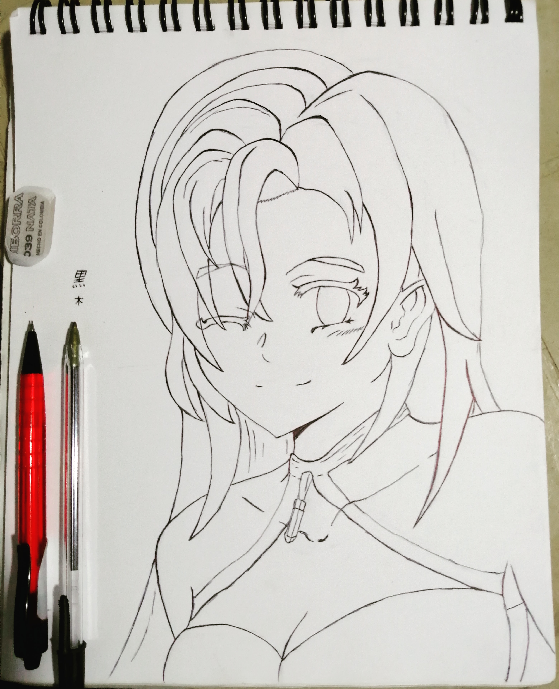

Rostro frontal. personajes: Tomioka Giyuu y un personaje propio (Haruto)
Cuando tenía 10 años, fuí a una exposición de dibujo de mmi pueblo. Allí vi varios
dibujos de personajes que veía en Tv, inmediatamente le dije a mi mamá que quería
aprender a dibujar de esa manera. Ella busco a la profesora y el año siguiente me
inscribí. allí aprendí lo básico; bocetos, extructura y como construir dibujoas a
base de figuras geométricas.
Varios años despues, dejé la academia para empezar a ser más autodidacta en mis di-
bujos. deje de copiar las imágenes para comenzar a hacer mis propios personajes y
mis propias creaciones.
Aquí unos cuantos dibujos que he realizado en los últimos
